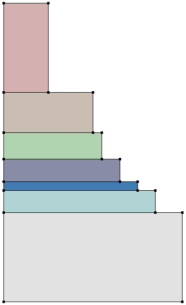

Sentaurus Structure Editor
5. Scripting and Parameterization
5.1 Overview
5.2 Scheme Basics
5.3 Defining Simple Variables and Data Types
5.4 Printing Text to Standard Output
5.5 Arithmetic Operators
5.6 Arithmetic Expressions
5.7 Example 1: Creating a Parameterized Device
5.8 Boolean Operations
5.9 If Blocks
5.10 String Operations
5.11 Simple Do Loops
5.12 Lists
5.13 For Each Loops
5.14 Example 2: Creating a Parameterized Layer Structure Using Lists
5.15 Procedures
5.16 Assignment
5.17 Further Reading
Objectives
- To use Scheme scripting in input files of Sentaurus Structure Editor.
5.1 Overview
The scripting language of Sentaurus Structure Editor is based on Scheme, which is a LISP-like programming language that differs significantly from most widely used programming languages. A working knowledge of Scheme is needed to create Sentaurus Structure Editor scripts for parameterized devices.
This section introduces the most useful Scheme commands. For more information, see Section 5.17 Further Reading.
5.2 Scheme Basics
To execute a Scheme command, type or copy it into the command-line window, or load a Scheme script using:
- Choose File > Import.
- In the dialog box, in the Files of type field, select Scheme Script Files.
- Select a script file.
- Click Open.
A Scheme command is enclosed in parentheses:
(Scheme command)
All text in a line after a semicolon is treated as a comment:
; This is a comment (Scheme command) ; This is also a comment
A Scheme command can extend over several lines:
(beginning of Scheme command continuation of the same Scheme command end of the Scheme command)
Several Scheme commands can be on a single line:
(first Scheme command) (second Scheme command) (...)
5.3 Defining Simple Variables and Data Types
Integers and floating-point numbers are treated as numbers. Declare and define a numeric variable with:
(define i 3) (define pi 3.141593)
Strings are enclosed in double quotation marks. Declare and define a string with:
(define W "Hello World")
Characters are preceded by #\. Declare and define a character with:
(define CHAR #\a)
Use the variable name to reference a variable:
i pi W CHAR
When you type the variable name (without parentheses) in the command-line window, you will be prompted for the value to which the variable evaluates. Alternatively, use the general method described in Section 5.4 Printing Text to Standard Output.
Update an existing variable with:
(define j 1) (set! j (+ j 1)) j ;-> 2
Use define when a variable is introduced for the first time. Use set! to alter an existing variable.
5.4 Printing Text to Standard Output
Use the display command to write to standard output. Use newline to create a line break. Use (begin ...) to group several display commands:
(begin (display "The value of i is ") (display i) (newline))
(begin (display "The value of pi is ") (display pi) (newline))
(begin (display "The string W contains >")
(display W) (display "<") (newline))
Output:
The value of i is 3 The value of pi is 3.141593 The string W contains >Hello World<
5.5 Arithmetic Operators
Some of the most useful arithmetic operators are:
- Addition, subtraction, multiplication, and division: + - * /
- Trigonometric and related functions: sin z, cos z, tan z, asin z, acos z,
atan z - Exponential and related functions: exp z, log z, sqrt z
- Raising z1 to the power of z2: expt z1 z2
- Rounding: floor z, ceiling z, truncate z, round z
- Maximum and minimum: max z1 z2 ..., min z1 z2 ...
To check for the complete name of a Scheme command, you can view all the Scheme commands that contain a given substring using:
(apropos 'substring)
5.6 Arithmetic Expressions
Scheme uses reverse Polish notation for arithmetic expressions:
- To set the variable j to i+5, type:
(define j (+ i 5)) j ;-> 8
- To set the variable myangle to sin(PI/2), type:
(define myangle (sin (/ PI 2))) myangle ;-> 1.0
- To set the variable x to xo + R*cos(2*PI*fi/360), type:
(define xo 1) (define R 0.2) (define fi 30) (define x (+ xo (* R (cos (/ (* 2 PI fi) 360 ))))) x ;-> 1.17320508075689
5.7 Example 1: Creating a Parameterized Device
;---------------------------------------------------------------------- ; Setting parameters ; - lateral (define Ltot 1.0) ; [um] Lateral extend total (define Lg 0.2) ; [um] Gate length (define Lsp 0.1) ; [um] Spacer length ; - layers (define Hsub 0.8) ; [um] Substrate thickness (define Hbox 0.1) ; [um] Buried oxide thickness (define Hepi 0.1) ; [um] EPI thickness (define Tox @Tox@) ; [um] Gate oxide thickness (define Hpol 0.2) ; [um] Poly gate thickness
;---------------------------------------------------------------------- ; Derived quantities (define Xmax (/ Ltot 2.0)) (define Xg (/ Lg 2.0)) (define Xsp (+ Xg Lsp)) (define Yepi Hepi) (define Ybox (+ Yepi Hbox)) (define Ysub (+ Ybox Hsub)) (define Ygox (* Tox -1.0)) (define Ypol (- Ygox Hpol))
;---------------------------------------------------------------------- ; Creating substrate region (sdegeo:create-rectangle (position (* Xmax -1.0) Ybox 0.0 ) (position Xmax Ysub 0.0 ) "Silicon" "R.Substrate" )
Click to view the entire parameterized command file soifet_parameterized_dvs.cmd.
The complete project can be investigated from within Sentaurus Workbench in the directory Applications_Library/GettingStarted/sde/soifet. Refer to the Sentaurus Structure Editor tool instance labeled soifet_parameterized.
To work with the example, copy the project into your Sentaurus Workbench working directory. In the above commands, the Sentaurus Workbench parameter @Tox@ is used. The Sentaurus Workbench preprocessor replaces this parameter by the value specified in the Sentaurus Workbench project (1e-4). The resulting preprocessed file will be finally used by Sentaurus Structure Editor.
5.8 Boolean Operations
True and false constants are denoted by #t and #f, respectively.
Use not to invert a Boolean:
(not #t) ;-> #f
Numeric comparators are =, >, >=, <, <=, for example:
(= 1 2) (> 1 2) (=> 1 2) (< 1 2) (<= 1 2)
Use the equal? operator to test if two entities are equal:
(define a 1) (define b "hello") (equal? a b)
Result: #f
(set! b 1) (equal? a b)
Result: #t
The equal? operator also can be used to test ACIS entities:
(define a (position 0 0 0)) (define b (position 0 0 0)) (equal? a b)
Result: #t
(set! b (position 1 0 0)) (equal? a b)
Result: #f
5.9 If Blocks
A simple If block is:
(define val 0) (if (= val 0) (begin (display "val is zero") (newline) ) )
Output: "val is zero"
An If-else block is:
(define val -1) (if (< val 0) ; Test (begin ; Execute if condition is true (display "val is negative") (newline) ) (begin ; Execute if condition is false (display "val is positive") (newline) ) )
Output: "val is negative"
An If-elseif block is:
(define val -1)
(cond
((= val 0) ; First test
(begin ; Execute if first condition is true
(display "val is zero")
(newline)
)
)
((> val 0) ; Else-if test
(begin ; Execute second condition is true
(display "val is positive")
(newline)
)
)
(else
(begin ; Execute if none of the conditions is true
(display "val is negative")
(newline)
)
)
)
Output: "val is negative"
To comment out a large block of comments
in a script, enclose the block in a trivial If block:
(if #f (begin
commands to be "commented out"
))
5.10 String Operations
To automatically generate identifiers, for example, region names, certain string operations are useful.
- To define a string, use:
(define TEXTSTRING "This is a string")
- To determine the length of a string, use:
(define STRINGLENGTH (string-length TEXTSTRING))
Result: STRINGLENGTH -> 16 - To retrieve the k-th character of a string, use (index count starts from 0):
(define k 5) (define kthCHARACTER (string-ref TEXTSTRING k))
Result: kthCHARACTER -> i - To retrieve substrings, use (index count starts from 0):
(define iStart 10) (define iEnd 16) (define SUBSTRING (substring TEXTSTRING iStart iEnd))
Result: SUBSTRING -> "string" - To concatenate two strings, use:
(define RNAME "Region.") (define QUALIFIER "Substrate") (define REGIONNAME (string-append RNAME QUALIFIER))
Result: REGIONNAME -> "Region.Substrate" - To convert a number (index) to a string, use:
(define RNAME "Region.") (define INDEX 3) (define REGIONNAME (string-append RNAME (number->string INDEX)))
Result: REGIONNAME -> "Region.3"
5.11 Simple Do Loops
In this example, a simple Do loop is used to create a stack of five silicon squares:
(define L 1) ; Side length of first square
(define Y 0) ; Bottom Y coordinate of current square
(do ( (i 0 (+ i 1)) ) ; i: Counter name; 0: initial value; (+ i 1): incrementer
( (= i 5) ) ; End Tester
(begin ; Body of loop
(define REGION (string-append "region." (number->string i)))
(sdegeo:create-rectangle
(position (* -0.5 L) Y 0.0)
(position (* 0.5 L) (+ Y L) 0.0) "Silicon" REGION)
(set! Y (+ Y L))
(set! L (* 0.75 L))
)
)
Scheme Do loops are more flexible than Do loops in most other languages. This example illustrates a basic setup. For more elaborate Do loop options, see Section 5.17 Further Reading.
5.12 Lists
Some Sentaurus Structure Editor commands accept lists as arguments. Lists also can be useful in device parameterization.
- To define a list, use:
(define ABCList (list #\a #\b #\c #\d #\e)) ; List of characters (define NUMList (list 1 2 3 4 5 6)) ; List of numbers (define MIXList (list #\a 2 3.1415 "TCL")) ; Mixed list (define EMPTYList (list )) ; Empty list
Declare an empty list first if you want to append to it in a Do loop, for example.
- To reference a list as a whole, use the list name:
ABCList NUMList MIXList EMPTYList
- To determine the number of elements in a list, use:
(define NumberOfElements (length ABCList))
Result: NumberOfElements -> 5 - To append an element to a list, use:
(define NewElement #\f) (define ABCPlusList (append ABCList NewElement))
Result: ABCPlusList -> (#\a #\b #\c #\d #\e #\f) - To concatenate two lists, use:
(define CombinedList (append ABCList NUMList))
Result: CombinedList -> (#\a #\b #\c #\d #\e 1 2 3 4 5 6) - To reverse a list, use:
(define ReverseList (reverse NUMList))
Result: ReverseList -> (6 5 4 3 2 1) - To reference the first element of a list, use:
(define FirstElement (car ABCList))
Result: FirstElement -> #\a - To reference all but the first element of a list, use:
(define RestOfList (cdr ABCList) )
Result: RestOfList -> (#\b #\c #\d #\e) - To reference the k-th element in a list, use:
(define k 3) (define kthElement (list-ref ABCList k) )
Result: kthElement -> #\d
The numbering of list elements starts at zero.
- To reference a sublist containing all but the first k elements, use:
(define k 3) (define kRestOfList (list-tail ABCList k))
Result: kRestOfList -> (#\d #\e)
5.13 For Each Loops
In a For Each loop, an action is taken for each element in a list. In the following example, the For Each loop steps through the lists NUMList and ABCList, and prints a sentence for each element:
(for-each
(lambda (NUM CHAR)
(begin
(display "The ") (display NUM)
(display " letter of the alphabet is ") (display CHAR)
(newline)
)
) NUMList ABCList
)
Result:
The 1 letter of the alphabet is a The 2 letter of the alphabet is b The 3 letter of the alphabet is c The 4 letter of the alphabet is d The 5 letter of the alphabet is e
5.14 Example 2: Creating a Parameterized Layer Structure Using Lists
(sde:clear)
(define MATERIALS (list "GaAs" "AlGaAs" "AlAs" "InAlAs" "InAs" "InAsP" "InP"))
(define WIDTHS (list 2.0 1.7 1.5 1.3 1.1 1.0 0.5))
(define HEIGHTS (list 1.0 0.25 0.1 0.25 0.3 0.45 1.0))
(define Y 0)
(for-each
(lambda (MATERIAL WIDTH HEIGHT) ; Names of local variables
(begin ; Body of the loop
(define REGION (string-append "region." MATERIAL))
(sdegeo:create-rectangle
(position 0 Y 0.0)
(position WIDTH (+ Y HEIGHT) 0.0) MATERIAL REGION)
(set! Y (+ Y HEIGHT))
)
) MATERIALS WIDTHS HEIGHTS ; Lists
)

Figure 1. Parameterized layer structure created using lists.
For setting up layered structures (for example, multijunction solar-cell or multiple quantum-well devices), dedicated functions have been developed. See the (sdeepi:create-layerstack) Scheme extension in Sentaurus™ Structure Editor User Guide, Chapter 8. A complete solar cell project using this function can be investigated from within Sentaurus Workbench in the directory Applications_Library/Solar/SolarCell_DualJunct_GaAs.
5.15 Procedures
Procedures or macros can be implemented to reuse common code sections:
(sde:clear)
(define CreateUnitCell ; Name of procedure
(lambda (Xo Yo) ; Argument list
(begin ; Body of procedure
(sdegeo:set-default-boolean "ABA")
(define SiREGION (string-append "R.Silicon."
(number->string Xo) "." (number->string Yo)))
(define OxREGION (string-append "R.Oxide."
(number->string Xo) "." (number->string Yo)))
(sdegeo:create-rectangle
(position Xo Yo 0.0)
(position (+ Xo 1.0) (+ Yo 1.0) 0.0) "Silicon" SiREGION)
(sdegeo:create-rectangle
(position Xo Yo 0.0)
(position (+ Xo 0.25) (+ Yo 0.75) 0.0) "Oxide" OxREGION)
)
)
)
(CreateUnitCell 1 1) ; Procedure calls
(CreateUnitCell 2 1)
(CreateUnitCell 3 1)
{kind=link}
Figure 2. Unit cells created using procedures. (Click image for full-size view.)
Scheme procedures, or any other code
segments, can be saved in a library file, for example,
util.scm and loaded into a Scheme script with:
(load "util.scm")
5.16 Assignment
Write a Sentaurus Structure Editor Scheme script that creates the geometry, doping, and meshing definitions for the simple diode structure shown in Figure 3.
The diode consists of two regions: a silicon substrate and a partially recessed polysilicon region. All coordinates of the geometric structure should be specified as Scheme variables. The contact Top sits on the top edge of the polysilicon region, and the contact Bot sits on the bottom edge of the silicon region.
The polysilicon region is uniformly n-doped, and the silicon region is uniformly p-doped. The doping levels should be specified as Scheme variables.
Define separate meshing strategies for the polysilicon and silicon regions. The number of nodes along the x-direction and y-direction should be specified as Scheme variables. Use interface refinement on the polysilicon side of the silicon–polysilicon interface in your refinement strategy.
{kind=link}
Figure 3. Simple diode structure. (Click image for full-size view.)
{kind=link}
Figure 4. Simple diode structure with its (left) doping conditions and (right) mesh conditions. (Click image for full-size view.)
HINT After launching Sentaurus Structure Editor:
- Start the journal mode by choosing File > Journal > On.
- In the dialog box, in the File name field, enter m3d.jrl.
- Create the structure interactively.
- Save the journal by choosing File > Journal > Off.
- Open the journal file with a text editor and parameterize it.
Click to view a solution of the command file parameterized_diode_dvs.cmd.
The complete project can be investigated from within Sentaurus Workbench in the directory Applications_Library/GettingStarted/sde/SimpleDiode.
5.17 Further Reading
Some recommended publications and websites are:
- Sentaurus™ Structure Editor User Guide, Chapter 9.
- Revised5 Report on the Algorithmic Language Scheme
This report can be found at https://www.schemers.org/Documents/Standards/R5RS/r5rs.pdf. - R. Kent Dybvig, The Scheme Programming Language: ANSI Scheme, Prentice Hall, 1996.
- D. P. Friedman and M. Felleisen, The Little Schemer, MIT Press, 4th ed., 1996.
- D. P. Friedman and M. Felleisen, The Seasoned Schemer, MIT Press, 1996.
- https://www.scheme.com (website of a Scheme dialect, Chez Scheme).
- https://www.schemers.org (website of Scheme-related topics).
Copyright © 2022 Synopsys, Inc. All rights reserved.